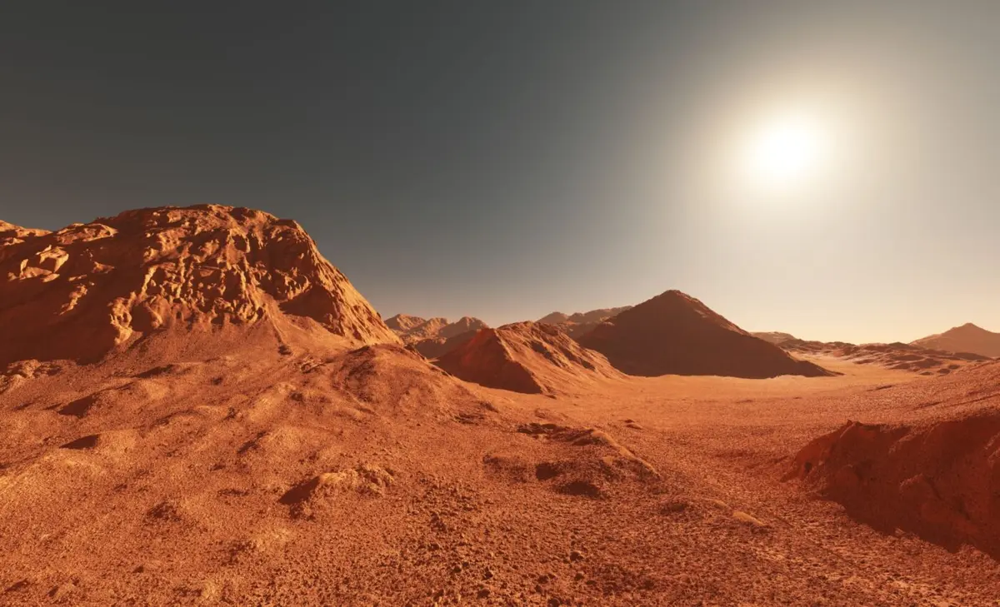
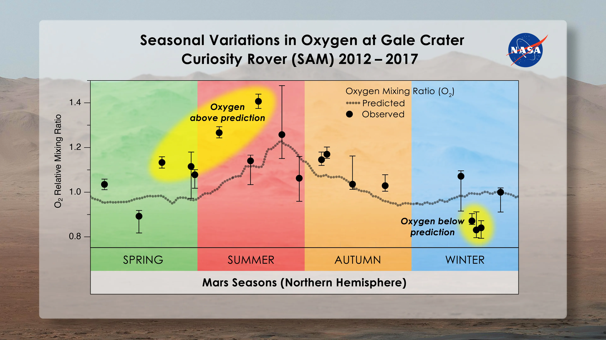
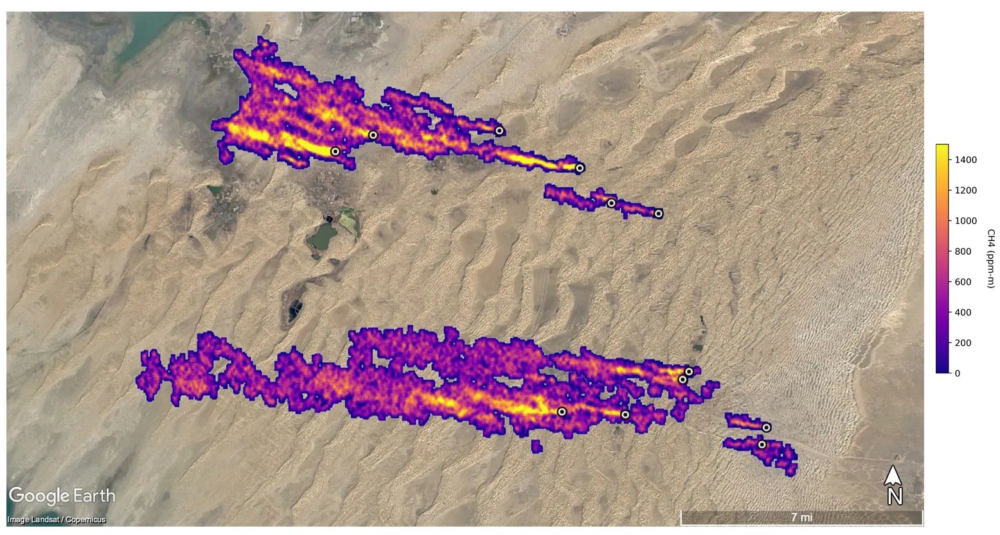
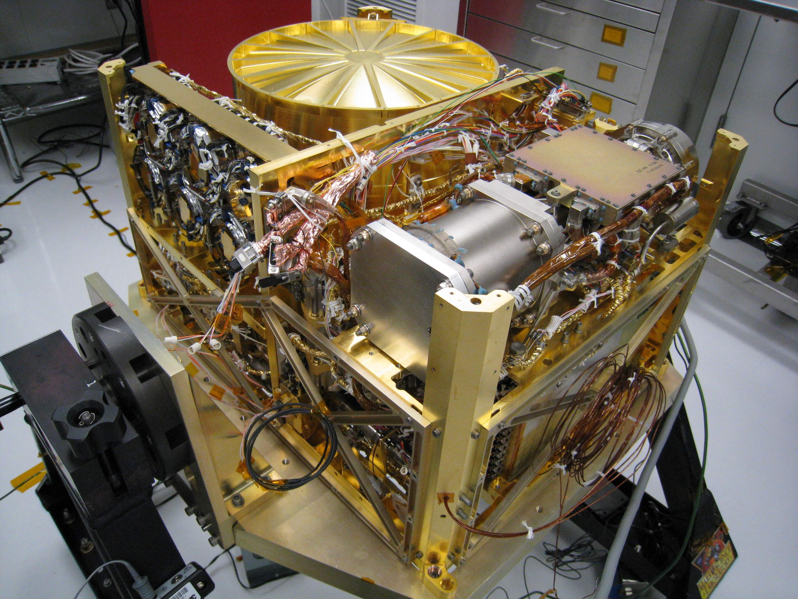

Scientific Aspects

Methane Sources
Mars' methane could originate from biological sources like methanogenic microbes, or geological processes such as serpentinization and volcanism. Atmospheric reactions involving water and carbon dioxide under ultraviolet light may also produce methane.
Recent discoveries show methane levels vary seasonally, with higher concentrations in summer months, suggesting an active process rather than ancient trapped gas.

Methane Detection
Scientists detect Martian methane using spectroscopy from orbit (ExoMars Trace Gas Orbiter) and surface measurements (Curiosity rover's SAM instrument). These tools analyze sunlight absorption patterns to identify methane's unique spectral signature.
Ground-based telescopes and the Mars Express orbiter have also contributed to methane detection efforts, though results sometimes conflict.
Seasonal Variations
Mars' methane shows puzzling seasonal patterns, peaking in northern summer at 0.65 parts per billion. This cyclical behavior suggests an active source and rapid destruction mechanism in the Martian environment.
The variations may relate to temperature changes, atmospheric pressure, or subsurface water activity, providing clues about methane's origin and Mars' current geological activity.
Exploration and Research
NASA's Curiosity Rover
Since 2012, Curiosity's Sample Analysis at Mars (SAM) instrument has made repeated methane detections in Gale Crater. The rover's Tunable Laser Spectrometer provides precise measurements, revealing background levels and occasional spikes up to 21 ppb.
Curiosity's data suggests methane is released episodically from localized sources, possibly through cracks in the Martian surface during warmer periods.
ESA's ExoMars Mission
The ExoMars Trace Gas Orbiter (TGO), launched in 2016, carries the most sensitive methane detector sent to Mars. Surprisingly, TGO found no methane in Mars' upper atmosphere, creating a mystery about how Curiosity detects surface methane that doesn't reach higher altitudes.
The upcoming Rosalind Franklin rover will drill up to 2 meters to search for organic compounds that might produce methane.
Future Mars Missions
NASA's Mars 2020 Perseverance rover carries instruments that could provide context for methane findings. The planned Mars Life Explorer would specifically target subsurface habitability and potential biosignatures.
Japan's MMX mission and China's Tianwen-3 sample return may also contribute to solving the methane puzzle through isotopic analysis of returned samples.
Implications and Speculations
Potential for Life
On Earth, most atmospheric methane comes from biological sources. If Mars' methane has a biological origin, it would suggest microbial life exists today in subsurface aquifers or hydrothermal systems, protected from surface radiation.
Even if abiotic, methane indicates active geological processes and possible habitable environments where life could theoretically exist.
Astrobiological Significance
Methane's presence revolutionizes our view of Mars as a dynamic world. Its detection drives the search for life and informs our understanding of planetary atmospheres and habitability.
The methane mystery highlights how little we understand about Mars' subsurface and atmospheric chemistry, making it a priority for astrobiological research.
Speculations and Controversies
Discrepancies between different missions' methane measurements have sparked debates about instrument accuracy, atmospheric destruction mechanisms, or localized release patterns.
Some scientists propose methane could be stored in subsurface clathrates and released seasonally, while others suggest rapid photochemical destruction in the atmosphere.
Visual Content
Seasonal Methane Variations on Mars

The graph titled “Seasonal Variations in Oxygen at Gale Crater – Curiosity Rover (SAM) 2012–2017” illustrates the relative mixing ratio of oxygen (O₂) in the Martian atmosphere over several years, as measured by NASA’s Curiosity Rover at Gale Crater. The x-axis represents the different Martian seasons in the Northern Hemisphere—Spring, Summer, Autumn, and Winter—while the y-axis indicates the relative mixing ratio of oxygen, which is a measure of the proportion of oxygen in the atmosphere. The dashed line on the graph shows the predicted oxygen levels based on known atmospheric chemistry, while the black dots represent the actual observed values collected by the rover. Notably, the graph reveals unexpected seasonal fluctuations in oxygen levels. During the Martian summer, observed oxygen levels significantly exceed predicted values, as highlighted in the yellow-shaded region labeled “Oxygen above prediction.” Conversely, during the winter season, observed oxygen levels fall below predictions, as shown in the blue-highlighted area labeled “Oxygen below prediction.” These deviations from the expected model suggest that there are unknown or poorly understood processes occurring in the Martian atmosphere that are influencing oxygen levels. The presence of error bars on the observed data points indicates the measurement uncertainties. Overall, this graph points to intriguing and unexplained atmospheric dynamics on Mars, possibly hinting at complex seasonal chemistry or other mechanisms not yet fully understood by scientists.

Methane Plume Detection
This image shows a satellite map with overlaid plume data, likely representing gas or particulate emissions (e.g., methane or dust) in a desert region. The color gradient from dark purple to yellow indicates increasing plume intensity (measured in ppm*m). The highest concentrations are seen in the bright yellow regions. Black-circled points might mark source locations or measurement sites.

Instrumentation
This image shows the Quadrupole Mass Spectrometer (QMS) instrument from the Sample Analysis at Mars (SAM) suite aboard NASA’s Curiosity rover. It's designed to analyze gases released from Martian soil and rock samples. The intricate wiring and gold-plated components help with thermal control and signal integrity. SAM plays a key role in detecting organic molecules on Mars.